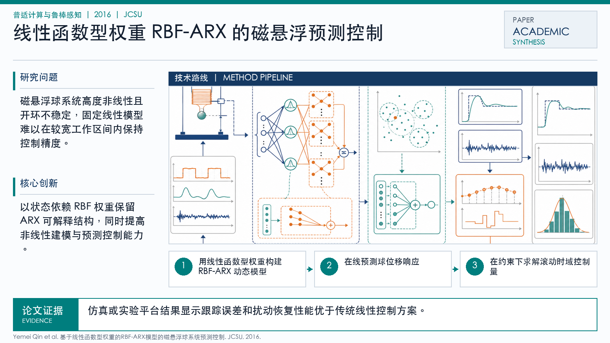

Problem
解决的问题
磁悬浮球系统高度非线性且开环不稳定，固定线性模型难以在较宽工作区间内保持控制精度。
Pervasive Computing and Robust Sensing · 2016 · JCSU
基于线性函数型权重的RBF-ARX模型的磁悬浮球系统预测控制
Problem
磁悬浮球系统高度非线性且开环不稳定，固定线性模型难以在较宽工作区间内保持控制精度。
Value
仿真或实验平台结果显示跟踪误差和扰动恢复性能优于传统线性控制方案。
Paper-grounded Academic Summary
该代表页依据原文摘要、贡献段与方法图注生成。方法视觉由 ImageGen 按论文证据逐篇绘制，中文研究问题、技术路线、创新点与实验结论采用确定性排版，以保证内容与字符准确。
打开原文 PDF
Technical Route
Innovation